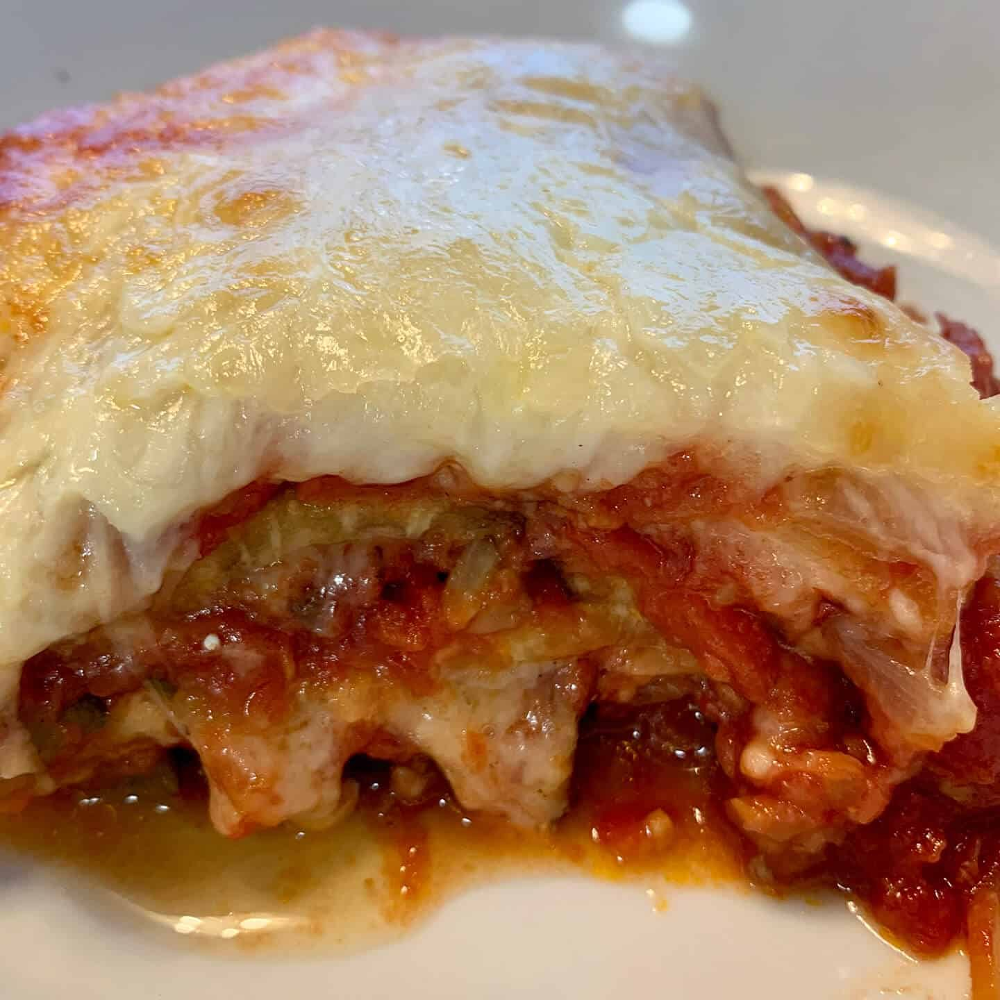

Butternut Squash Soup Recipe

About this recipe
This is a classic from my wife Sarah. It will warm you up on a cold winter's evening.
Ingredients
- 1 Medium Butternut Squash
- 1 Russet Potato
- Mirepox
- Vegan Butter
- 1 Can of Reduced Fat Coconut Milk
- 32oz of Vegetable Broth
- 1 Tbsp of Garlic Chili Paste
- 2 Cloves of Garlic
- Sage, Rosemary, Salt, and Pepper
Let's Get Started
- Roast the Butternut Squash with herbs and spices listed above (plus garlic) until soft
- Boil your Russet potato
- Make your Mirepox with your Vegan Butter
- Throw it all together and blend until creamy